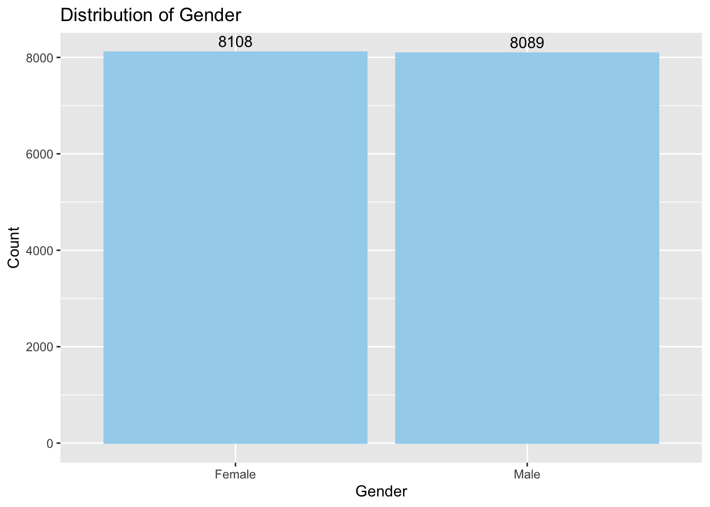
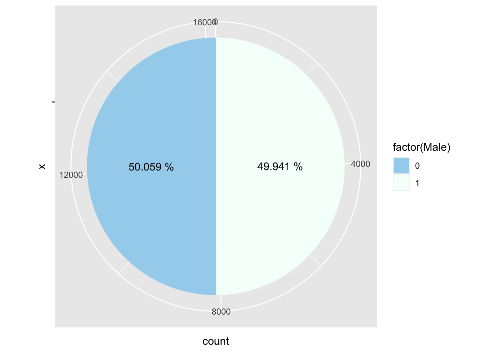

stu_id sch_id excellentTests understandTexts understandClass
Min. :101101 Min. :1011 Min. :1.00 Min. :1.000 Min. :1.00
1st Qu.:190106 1st Qu.:1901 1st Qu.:2.00 1st Qu.:2.000 1st Qu.:2.00
Median :281116 Median :2811 Median :2.00 Median :2.000 Median :2.00
Mean :279543 Mean :2795 Mean :2.58 Mean :2.383 Mean :2.46
3rd Qu.:369205 3rd Qu.:3692 3rd Qu.:3.00 3rd Qu.:3.000 3rd Qu.:3.00
Max. :461234 Max. :4612 Max. :4.00 Max. :4.000 Max. :4.00
NA's :5860 NA's :5883 NA's :5907
excellentAssign masterSkills Male SES_Grp Asian
Min. :1.000 Min. :1.000 Min. :0.0000 Min. :1 Min. :0.0000
1st Qu.:2.000 1st Qu.:2.000 1st Qu.:0.0000 1st Qu.:2 1st Qu.:0.0000
Median :3.000 Median :3.000 Median :0.0000 Median :2 Median :0.0000
Mean :2.865 Mean :2.757 Mean :0.4994 Mean :2 Mean :0.1021
3rd Qu.:4.000 3rd Qu.:4.000 3rd Qu.:1.0000 3rd Qu.:2 3rd Qu.:0.0000
Max. :4.000 Max. :4.000 Max. :1.0000 Max. :3 Max. :1.0000
NA's :5913 NA's :5903
Black Hispanic Other
Min. :0.0000 Min. :0.0000 Min. :0.00000
1st Qu.:0.0000 1st Qu.:0.0000 1st Qu.:0.00000
Median :0.0000 Median :0.0000 Median :0.00000
Mean :0.1339 Mean :0.1502 Mean :0.05606
3rd Qu.:0.0000 3rd Qu.:0.0000 3rd Qu.:0.00000
Max. :1.0000 Max. :1.0000 Max. :1.00000
library(ggplot2)# excellent testggplot(els, aes(x = excellentTests)) +geom_histogram(binwidth =1, fill ="darkseagreen3", color ="darkseagreen3") +geom_text(stat ='count', aes(label = ..count.., y = ..count..), vjust =-0.5) +labs(title ="Histogram of Excellent Test Scores", x ="Excellent Test Scores", y ="Frequency")
Warning: The dot-dot notation (`..count..`) was deprecated in ggplot2 3.4.0.
ℹ Please use `after_stat(count)` instead.
# understand classggplot(els, aes(x = understandClass)) +geom_histogram(binwidth =1, fill ="darkseagreen3", color ="darkseagreen3") +geom_text(stat ='count', aes(label = ..count.., y = ..count..), vjust =-0.5) +labs(title ="Histogram of Understanding Class Material Scores", x ="Understanding Class Material Scores", y ="Frequency")
The following objects are masked from 'package:stats':
filter, lag
The following objects are masked from 'package:base':
intersect, setdiff, setequal, union
library(tidyr)library(ggplot2)# Assuming els is your original dataframe# First, create els_long correctlyels_long <- els %>%pivot_longer(cols =c("excellentTests", "understandTexts", "understandClass", "excellentAssign", "masterSkills"),names_to ="ScoreType",values_to ="Scores" )# Then, calculate frequencies for ordering without prematurely referencing els_longscore_order <- els_long %>%group_by(ScoreType) %>%summarize(Frequency =n()) %>%arrange(desc(Frequency)) %>%pull(ScoreType)# Apply this order to ScoreType in els_longels_long$ScoreType <-factor(els_long$ScoreType, levels = score_order)# Now plot with ScoreType ordered by frequencyggplot(els_long, aes(x = Scores, fill = ScoreType)) +geom_histogram(position ="fill", alpha =0.5, binwidth =1) +# Changed to position = "fill" for clarityscale_fill_brewer(palette ="Set1") +# Use a distinct color palettelabs(title ="Combined Histogram of Scores",x ="Score Values",y ="Proportion") +# Changed to Proportion for position = "fill"theme_minimal() +guides(fill =guide_legend(title ="Score Type"))
library(tidyr)library(dplyr)library(ggplot2)# bar graph for each item# excellent test library(ggplot2)library(dplyr)# Calculate mean and medianmean_value <-mean(els$excellentTests, na.rm =TRUE)median_value <-median(els$excellentTests, na.rm =TRUE)# Create the bar graphggplot(els, aes(x =as.factor(excellentTests))) +geom_bar(fill ="darkseagreen3", color ="darkseagreen3") +labs(title ="Bar Graph of Excellent Test Scores", x ="Excellent Test Scores", y ="Count") +geom_text(aes(label = ..count..), stat ='count', position =position_stack(vjust =0.5), color ="white") +# Add count labelsannotate("text", x =Inf, y =Inf, label =paste("Mean:", round(mean_value, 2)), hjust =1.1, vjust =2, size =4, color ="black") +# Add mean labelannotate("text", x =Inf, y =Inf, label =paste("Median:", median_value), hjust =1.1, vjust =1, size =4, color ="black") # Add median label
# understand textlibrary(ggplot2)library(dplyr)# Calculate mean and median for understandTextsmean_understandTexts <-mean(els$understandTexts, na.rm =TRUE)median_understandTexts <-median(els$understandTexts, na.rm =TRUE)# Create the bar graph for understandTextsggplot(els, aes(x =as.factor(understandTexts))) +geom_bar(fill ="darkseagreen3", color ="darkseagreen3") +labs(title ="Bar Graph of Understanding Texts Scores", x ="Understanding Texts Scores", y ="Count") +geom_text(aes(label = ..count..), stat ='count', position =position_stack(vjust =0.5), color ="white") +annotate("text", x =Inf, y =Inf, label =paste("Mean:", round(mean_understandTexts, 2)), hjust =1.1, vjust =2, size =4, color ="black") +annotate("text", x =Inf, y =Inf, label =paste("Median:", median_understandTexts), hjust =1.1, vjust =1, size =4, color ="black")
# understand class# Calculate mean and median for understandClassmean_understandClass <-mean(els$understandClass, na.rm =TRUE)median_understandClass <-median(els$understandClass, na.rm =TRUE)# Create the bar graph for understandClassggplot(els, aes(x =as.factor(understandClass))) +geom_bar(fill ="darkseagreen3", color ="darkseagreen3") +labs(title ="Bar Graph of Understanding Class Material Scores", x ="Understanding Class Material Scores", y ="Count") +geom_text(aes(label = ..count..), stat ='count', position =position_stack(vjust =0.5), color ="white") +annotate("text", x =Inf, y =Inf, label =paste("Mean:", round(mean_understandClass, 2)), hjust =1.1, vjust =2, size =4, color ="black") +annotate("text", x =Inf, y =Inf, label =paste("Median:", median_understandClass), hjust =1.1, vjust =1, size =4, color ="black")
# excellent assignment# Calculate mean and median for excellentAssignmean_excellentAssign <-mean(els$excellentAssign, na.rm =TRUE)median_excellentAssign <-median(els$excellentAssign, na.rm =TRUE)# Create the bar graph for excellentAssignggplot(els, aes(x =as.factor(excellentAssign))) +geom_bar(fill ="darkseagreen3", color ="darkseagreen3") +labs(title ="Bar Graph of Excellent Assignment Scores", x ="Excellent Assignment Scores", y ="Count") +geom_text(aes(label = ..count..), stat ='count', position =position_stack(vjust =0.5), color ="white") +annotate("text", x =Inf, y =Inf, label =paste("Mean:", round(mean_excellentAssign, 2)), hjust =1.1, vjust =2, size =4, color ="black") +annotate("text", x =Inf, y =Inf, label =paste("Median:", median_excellentAssign), hjust =1.1, vjust =1, size =4, color ="black")
# master skills# Calculate mean and median for masterSkillsmean_masterSkills <-mean(els$masterSkills, na.rm =TRUE)median_masterSkills <-median(els$masterSkills, na.rm =TRUE)# Create the bar graph for masterSkillsggplot(els, aes(x =as.factor(masterSkills))) +geom_bar(fill ="darkseagreen3", color ="darkseagreen3") +labs(title ="Bar Graph of Mastering Skills Scores", x ="Mastering Skills Scores", y ="Count") +geom_text(aes(label = ..count..), stat ='count', position =position_stack(vjust =0.5), color ="white") +annotate("text", x =Inf, y =Inf, label =paste("Mean:", round(mean_masterSkills, 2)), hjust =1.1, vjust =2, size =4, color ="black") +annotate("text", x =Inf, y =Inf, label =paste("Median:", median_masterSkills), hjust =1.1, vjust =1, size =4, color ="black")
# stacked bar graphels_long <- els %>%pivot_longer(cols =c(excellentTests, understandTexts, understandClass, excellentAssign, masterSkills),names_to ="ScoreType",values_to ="Scores" )els_long_filtered <- els_long %>%filter(!is.na(Scores)) # Removes rows where Scores is NAlibrary(ggplot2)ggplot(els_long_filtered, aes(x = ScoreType, fill =as.factor(Scores))) +geom_bar(position ="stack") +geom_text(stat ='count', aes(label = ..count..), position =position_stack(vjust =0.5), size =3) +labs(title ="Frequency of Scores by Score Type", x ="Score Type", y ="Frequency") +scale_fill_brewer(palette ="Set4") +theme_minimal()
Warning: Unknown palette: "Set4"
# grouped bar graph# Calculate the dodge width for correct text alignmentdodge_width <-position_dodge(width =0.9)$widthggplot(els_long_filtered, aes(x = ScoreType, fill =as.factor(Scores))) +geom_bar(position ="dodge", stat ="count") +geom_text(aes(label = ..count..), stat ="count", vjust =-0.25, position =position_dodge(width = dodge_width), size =3) +labs(title ="Grouped Bar Graph of Scores by Score Type", x ="Score Type", y ="Count",fill ="Score Value") +scale_fill_brewer(palette ="Set4") +theme_minimal() +theme(axis.text.x =element_text(angle =45, hjust =1))
Warning: Unknown palette: "Set4"
# grouped bar plot for ethnicityels_long <- els %>%pivot_longer(cols =c("Asian", "Black", "Hispanic", "Other"),names_to ="Ethnicity",values_to ="Count") %>%group_by(Ethnicity) %>%summarize(Frequency =sum(Count))# Assuming the data is now properly aggregated, move to plottingggplot(els_long, aes(x = Ethnicity, y = Frequency, fill = Ethnicity)) +geom_bar(stat ="identity", position ="dodge") +geom_text(aes(label = Frequency), vjust =-0.3, position =position_dodge(width =0.9), size =4) +labs(title ="Frequency by Ethnicity", x ="Ethnicity", y ="Frequency") +scale_fill_brewer(palette ="Pastel1") +theme_minimal() +theme(axis.text.x =element_text(angle =45, hjust =1))
library(dplyr)library(ggplot2)library(tidyr) # Ensure tidyr is loaded for pivot_longer# Calculate the total counts for each categorycategory_counts <- els %>%summarise(Asian =sum(Asian, na.rm =TRUE),Black =sum(Black, na.rm =TRUE),Hispanic =sum(Hispanic, na.rm =TRUE),Other =sum(Other, na.rm =TRUE)) %>%pivot_longer(cols =everything(), names_to ="Category", values_to ="Counts")# Calculate percentagestotal_counts <-sum(category_counts$Counts)category_counts <- category_counts %>%mutate(Percentage = Counts / total_counts *100)ggplot(category_counts, aes(x ="", y = Counts, fill = Category)) +geom_bar(width =1, stat ="identity", color ="white") +coord_polar("y", start =0) +geom_text(aes(label =paste(Category, ": ", Counts, " (", sprintf("%.1f%%", Percentage), ")", sep ="")),position =position_stack(vjust =0.5)) +labs(title ="Distribution of Ethnicity", x =NULL, y =NULL, fill ="Category") +scale_fill_brewer(palette ="Pastel1") +theme_void() +theme(legend.position ="none")
summary(els$Male)
Min. 1st Qu. Median Mean 3rd Qu. Max.
0.0000 0.0000 0.0000 0.4994 1.0000 1.0000
library(ggplot2)# Bar Graphggplot(els, aes(x =as.factor(Male))) +geom_bar(fill ="lightskyblue2", color ="lightskyblue2") +geom_text(stat ='count', aes(label = ..count.., y = ..count..), vjust =-0.5, color ="black") +labs(title ="Distribution of Gender", x ="Gender", y ="Count") +scale_x_discrete(labels =c("0"="Female", "1"="Male")) # Adjust labels as per your data coding

# Pie Chartggplot(els, aes(x ="", fill =factor(Male))) +geom_bar(width =1) +coord_polar(theta ="y") +geom_text(aes(label =paste(round((..count..)/sum(..count..)*100, 3), "%")), stat ='count', position =position_stack(vjust =0.5)) +scale_fill_manual(values =c("0"="lightskyblue2", "1"="mintcream"))

labs(title ="Gender Distribution", x =NULL, y =NULL, fill ="Gender") +scale_fill_discrete(labels =c("0"="Female", "1"="Male"))